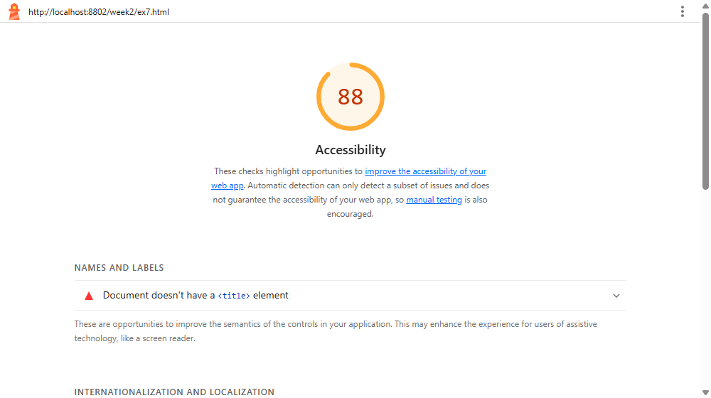
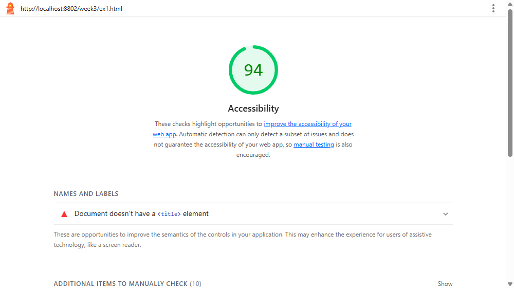
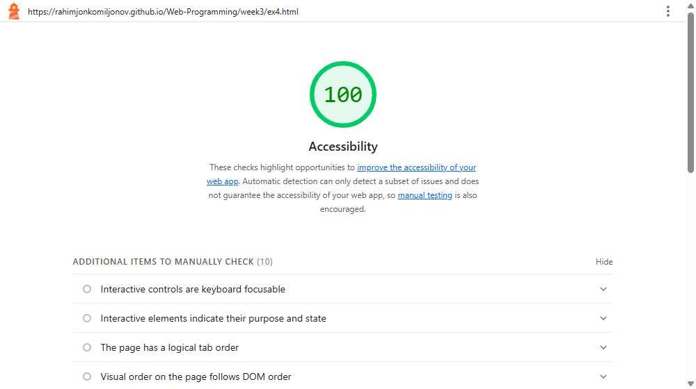
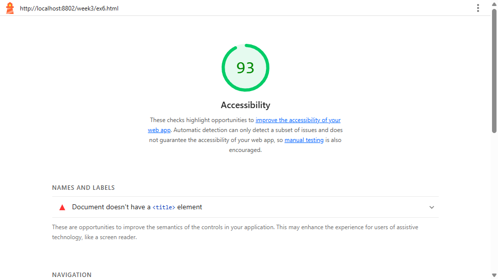
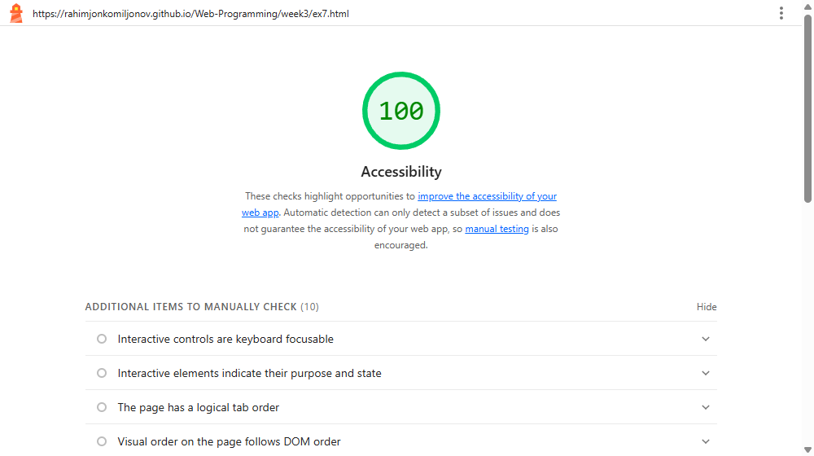

Accessibility Audit
I ran Lighthouse (Accessibility only) on every page of my site and fixed the ones that didn't score 100.
What I found
12 of the 48 pages scored below 100. Everything else was already at 100. The screenshots below are the real Lighthouse reports. The URL is at the top of each one.
The "before" screenshots say localhost because I ran them on my old code before I fixed it, and that version was never online. The "after" screenshots are from the live site.
What I fixed
- Missing page title: added a
<title>to 11 pages. Four Week 2 pages had no<head>at all, so I turned them into full pages. - Missing language: added
lang="en"to those four Week 2 pages. - Low contrast: the white text on the colour boxes in week3/ex3 was too light, so I made it black. The footer in week3/ex8 was too dark, so I made it lighter.
- Small links: the menu links in week2/ex3 were too small to tap, so I made them bigger.
- Skip link: I added a "Skip to main content" link. It shows up when you press Tab.

Scores for every page I changed
week2/ex2.html: 86 → 100
Problem: no title, no lang.


week2/ex3.html: 81 → 100
Problem: no title, no lang, links too small.


week2/ex4.html: 87 → 100
Problem: no title, no lang.
week2/ex7.html: 88 → 100
Problem: no title, no lang.

week3/ex1.html: 94 → 100
Problem: no title.

week3/ex2.html: 94 → 100
Problem: no title.
week3/ex3.html: 87 → 100
Problem: low contrast, no title.


week3/ex4.html: 93 → 100
Problem: no title.

week3/ex5.html: 94 → 100
Problem: no title.
week3/ex6.html: 93 → 100
Problem: no title.

week3/ex7.html: 94 → 100
Problem: no title.

week3/ex8.html: 94 → 100
Problem: low contrast.